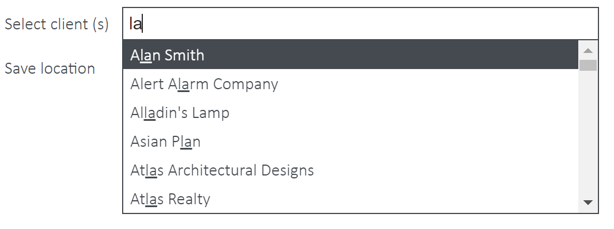
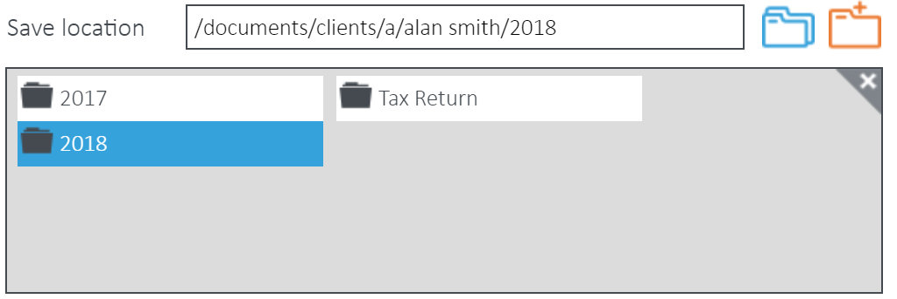
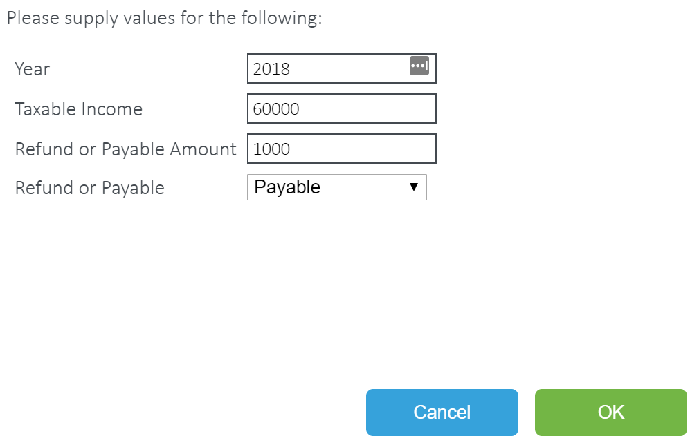
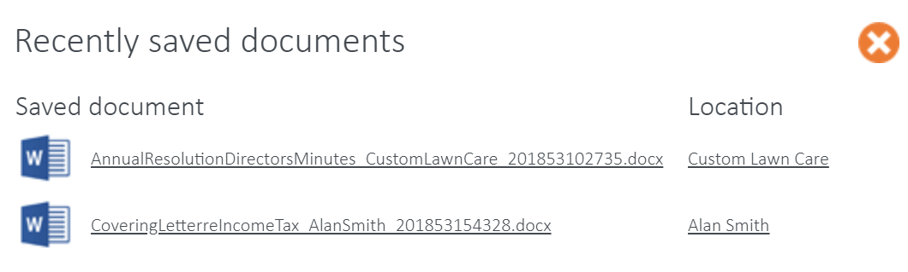

1.Select the template you wish to use by clicking either the Client or Job logo to the right of the document in order to merge with the relevant data. You will then be presented with a list of Clients or Jobs available to merge with.
2.Use the search bar to select the client/s or job/s you want. The search bar will look up all names with any of the characters you've typed in.

3.By default, the file will be saved in the client root folder.
4.However, if you want to save to a subfolder, click on the blue subfolder icon, then make a selection. You can navigate down through subfolders until you reach the one you want. You will see the new file save path in the Save location field. If you want to go back to a previous folder, simply deselect the current folder or click on the one above.
Please note, the functionality is unavailable if you select multiple clients and documents can only be saved to the root of each client's folder.

5.If you need to create a new folder, select where you want to add the folder and click the Add folder button. E.g. if I want to add a folder within 2018, I will select 2018. If I want to create a folder within Tax Return, I must select Tax Return before I select the Add folder button.
6.You will then be presented with a field to enter the new folder's name. Once you have entered a name, click the Save button.
7.You can also add metadata by clicking on the Metadata checkbox then entering data into the prompted fields.

8.Now select Save to client or Download file. If you select Save to client, the document will be saved to the client folder/subfolder you have selected above in SharePoint. Download file will instead save a local copy in your downloads folder.
Note, you will not need to add metadata or select a save location if you wish to download the file.
9.If the template has Custom Prompt Fields, you will need to enter the required information before processing is completed. Please note, if you have selected multiple clients, the custom data you enter will be applied to all client documents.

10.Click Ok and the document/s will be created. They will then appear in the View Saved Documents window, accessible from the link in the Control Bar.

From the View Saved Document section, you will be able to view the new document or navigate to the folder it was saved to in SharePoint by clicking the Client Folder link. If clicking the link in this view does not open a new window to the target location, you need to make sure your Popup Blocker setting in your browser is disabled.
For Internet Explorer: http://windows.microsoft.com/en-us/internet-explorer/ie-security-privacy-settings#ie=ie-11
For Chrome: https://support.google.com/chrome/answer/95472?hl=en
For Firefox: https://support.mozilla.org/en-US/kb/pop-blocker-settings-exceptions-troubleshooting